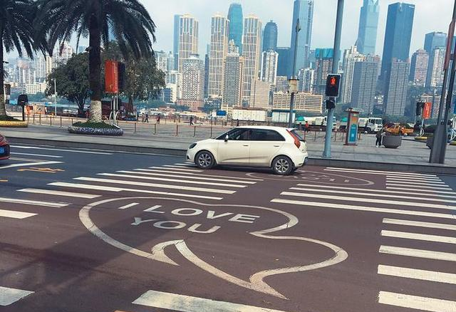
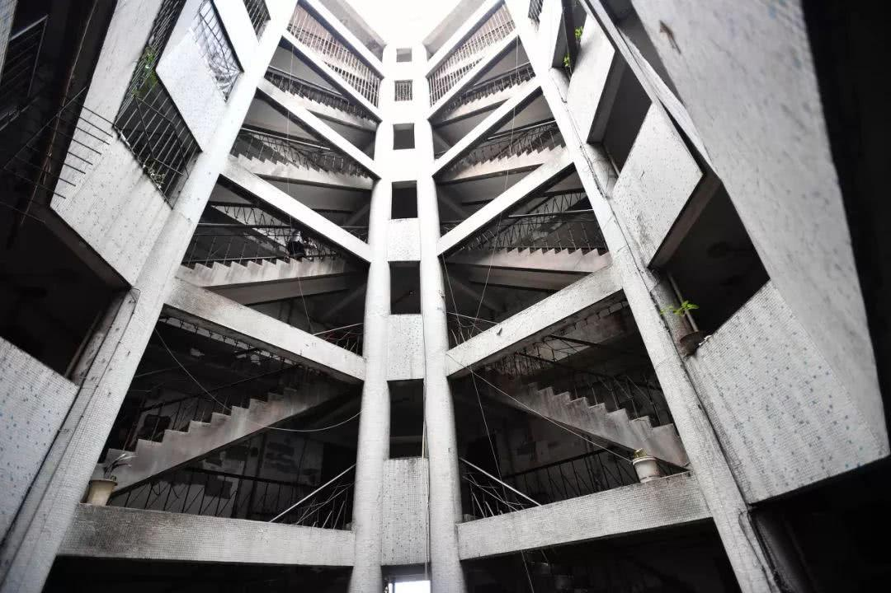
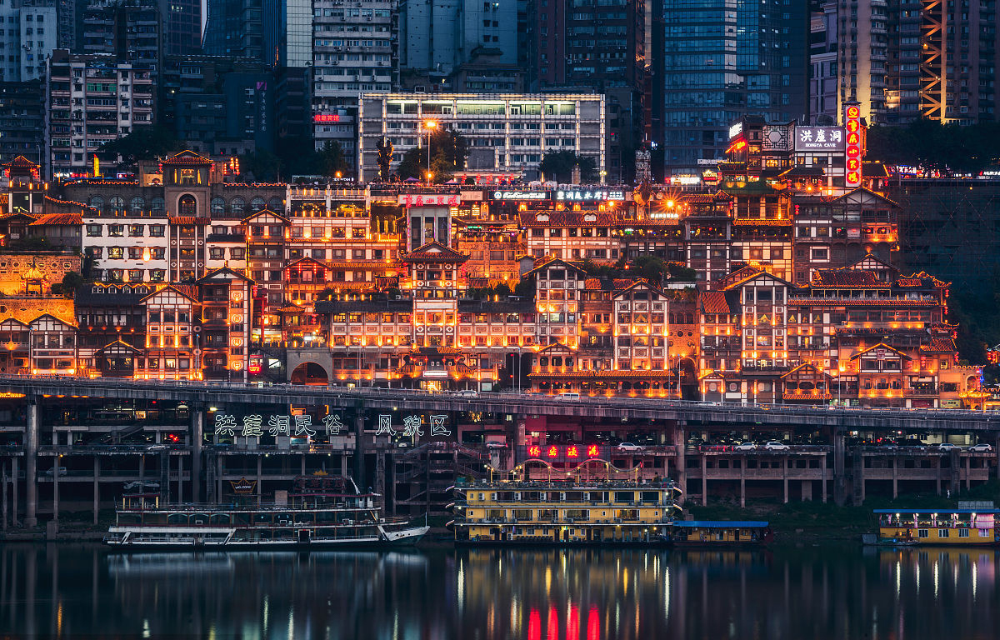
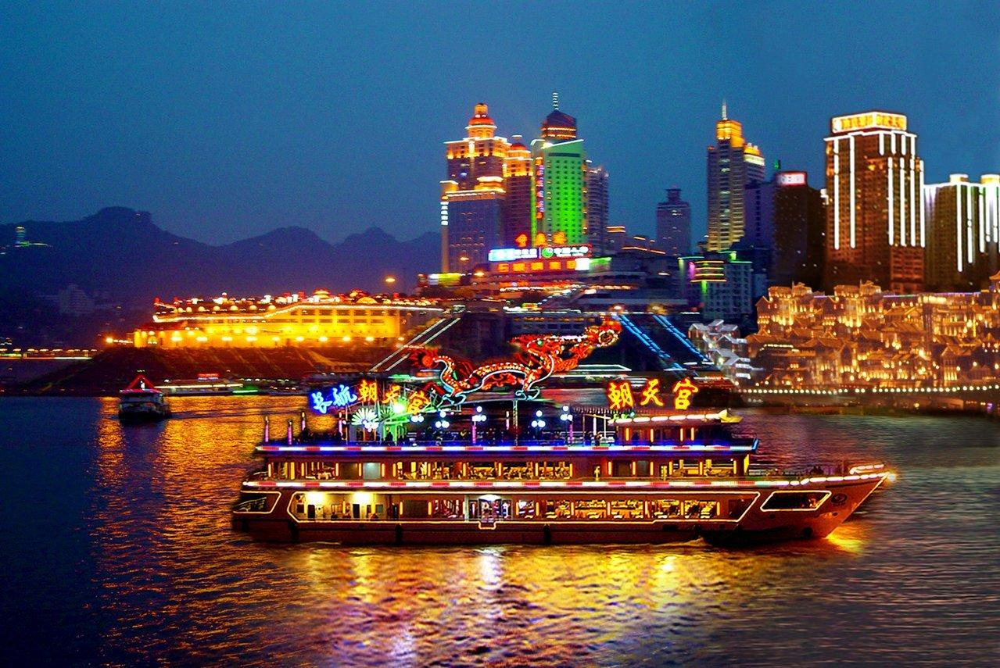
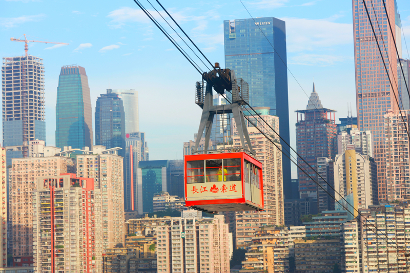

-

南滨路爱情斑马线
这条马路位于南滨路喜来登酒店门口，南滨路的对面即是解放碑，正好作为拍摄背景，可以在等红绿灯的路口拍摄照片，走走南滨路，吹吹嘉陵江的晚风，一度成为小众网红打卡地。但是此地段车流比较大，必须遵守交通规则，安全第一。 -

海棠溪筒子楼
电影《少年的你》周冬雨（陈念）的家——海棠溪筒子楼。位于南岸区南坪海棠溪正街32号。修建于上世纪的筒子楼，被包容在滨江路繁华的现代建筑群里，八字形天井，Z字形阶梯，一共十三层，没有电梯，阴冷怀旧的建筑风格，十足的复古感。此楼现在还有居民居住，吸引很多摄影爱好者前来打卡。 -

洪崖洞
洪崖洞民俗风貌区位于重庆市渝中区。北临嘉陵江，南接解放碑沧白路，以具有巴渝传统建筑特色的“吊脚楼”风貌为主体，通过分层筑台、吊脚、错叠、临崖等山地建筑手法，把餐饮、娱乐、休闲、保健、酒店和特色文化购物等六大业态有机整合在一起，形成了别具一格的“立体式空中步行街”，成为具有层次与质感的城市景区、商业中心。依山就势，沿江而建，房屋构架简单，开间灵活、形无定式，让解放碑直达江滨，可在千厮门大桥拍摄全景。 -

重庆两江游
“不览夜景，未到重庆”。重庆两江游是指乘坐观光游船，夜游长江和嘉陵江。从朝天门码头出发至黄花园大桥，调头至两江交汇处，再到喜来登酒店附近后返回朝天门码头。山城夜景，早在清乾隆时期就已有名气，被时任巴县知县王尔鉴，列为巴渝十二景之一。“两江游”是将重庆的山水与重庆夜景相结合而成为城市名片，是一个让外界直观、立体、动态、全方位、近距离、了解认识重庆、展示魅力重庆的最佳窗口。 -

长江索道
长江索道位于中国重庆市，往返于渝中区的新华路和南岸区的上新街。景区由渝中城史文化区、长江空中观光区、南岸影视文化区三部分组成，索道是构筑重庆独具特色的立体交通网络的重要组成部分，是与重庆山水人文特色相辉映，与山城景致相得益彰的城市名片。重庆市民可以刷重庆公交卡进行乘坐，节假日晚上客流量较大，需提前在小程序预约。
重庆市旅游攻略